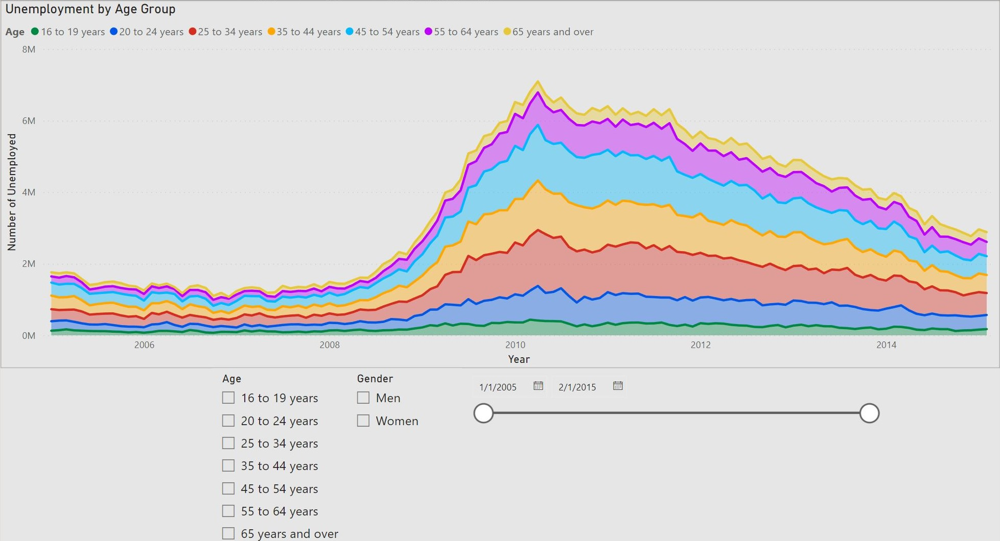
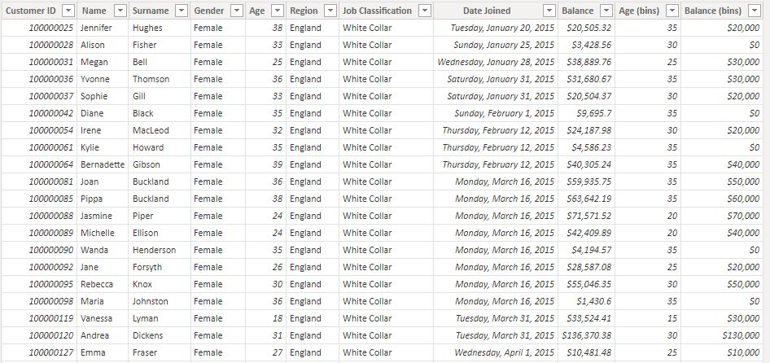

Power BI Practice
After finishing the Google Data Analytics certification, the only visualizations tool I was comfortable with was Tableau. While looking around, I noticed that Microsoft Power BI was another popular tool for creating similar visualizations. I decided to take a course on Udemy that teaches you how to use this software. In the following sections I'll be including some charts and dashboards along with a screenshot of the data used to make them.
Bar Charts
The data pictured below contians information on sales representatives and the items they have sold. Despite only containing seven columns,
there's a suprising amount of insight that this data can provide.
I created a lot of bar charts but I found the ones pictured below to be particulary interesting. The first charts shows the number of units
sold for each representative.
The second chart shows the total sales for each sales representative.
I found these two charts interesting because it shows how data can be misleading at first glance. If someone only saw the first chart, it
would be easy to assume that Richard is making the most sales. After all, he's selling the most product, right? Upon looking at
the second chart, they would realize that Richard is not even in the top three when it comes to total sales. I think this is an important
lesson when it comes to data. It's crucial to look a little deeper than what's being presented on the surface.
Area Chart with Slicers
The data shown below contains information on unemployment for different age groups. What's most interesting about this data is how it's
presented. In spreadsheet format, it is very hard to interpret and is not "human friendly". However, for Power BI, this format works perfect
for making visualizations.
The below area graph shows the number of unemployed for each age group.

This graph is particularly useful because the data changes with the slicers. I'll include some examples below.
While the area charts shown above are informative and insightful, I find the focal point of this section to be the slicer feature. This feature
allows for intuitive filtering that can allow stakeholders to answer their own questions. Instead of creating many charts and graphs for each
use case, Power BI enables us to create one interactive chart. The functionality of this feature allows for unlimited possibilities and cannot
be overstated.
Europe Sales Dashboard
For this dashboard I had to join two datasets (shown below): ListOfOrders and OrderBreakdown. ListOfOrders has information on
each individual order like order number, customer name, shipping date, etc. Each order can have multiple products included.
OrderBreakdown contains data on what is inside each order along with the price and profit for each item. Since each order was distinct
in ListOfOrders and reoccuring for each item in OrderBreakdown, I joined them on a one-to-many relationship.

Below is the dashboard that shows information on the sales for each country.
This dashboard displays a lot of important information that would be valued by any stakeholder. The map graph shows the sales for each country.
The circle size increases as the sales increases and the color satures red when the profit margin decreases.
This dashboard can be interacted with in multiple ways. First, the slicers can be used to filter the data based off of the region and
order date. Next, the year can be changed and selected in the donut graph. Lastly, the country can be selected to make the other graphs
more specific. I will include some examples below.

Once again, I think that this dashboard is very powerful with all of the interactive features provided by Power BI. A dashboard like this one
allows stakeholders to explore important demographics which can lead to further insights.
Bank Demographics Dashboard
This dashbaord only uses one dataset. The dataset includes banking information for people in England, Scotland, Wales, and Northern Ireland.
Disclaimer: This is a fictional dataset. No REAL personal data is being comprimised.

The dashboard shows a variety of important information pertaining to the bank's customers like their age, gender, and job type.
This dashboard does not contain any slicers but
it still has many interactive features. For example, the region, age and gender graphs can be selected to make the data more specific. I will include some examples below.
 (Results for England only.)
(Results for Female only.)
(Results for Blue Collar only.)
(Results for England only.)
(Results for Female only.)
(Results for Blue Collar only.)
Like the previous dashboard, this one contains a lot of important information that can be used by a stakeholder to make data-driven decisions.
Having access to an interactive dashboard with all of a banks demographic information is extremely valuable.
Conclusion
In this "mini project" I have only explored the surface of what can be done with Power BI. I found the graphs and charts to be very intuitive
and simple to design. Once I learned how to format properly, it was simple to change the titles and designs of my visualizations.
Being able to add slicers makes dashboards easy to filter and comprehend. Because this tool is so user-friendly,
it would not take long to teach a stakeholder to use it. Power BI is a very powerful visulization tool that I will
continue to use as a Data Analyst.